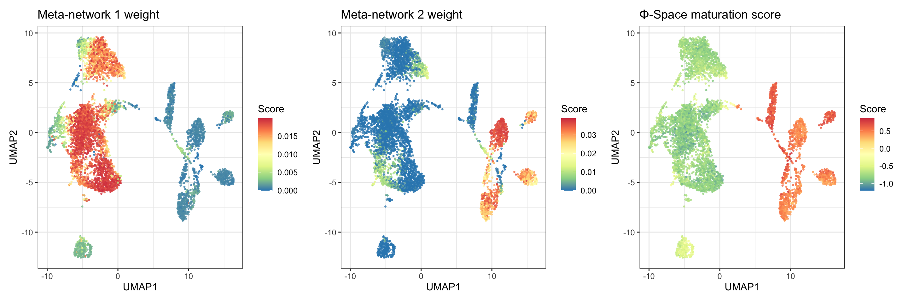
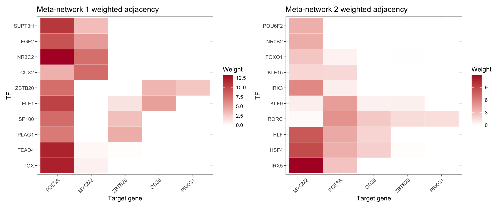
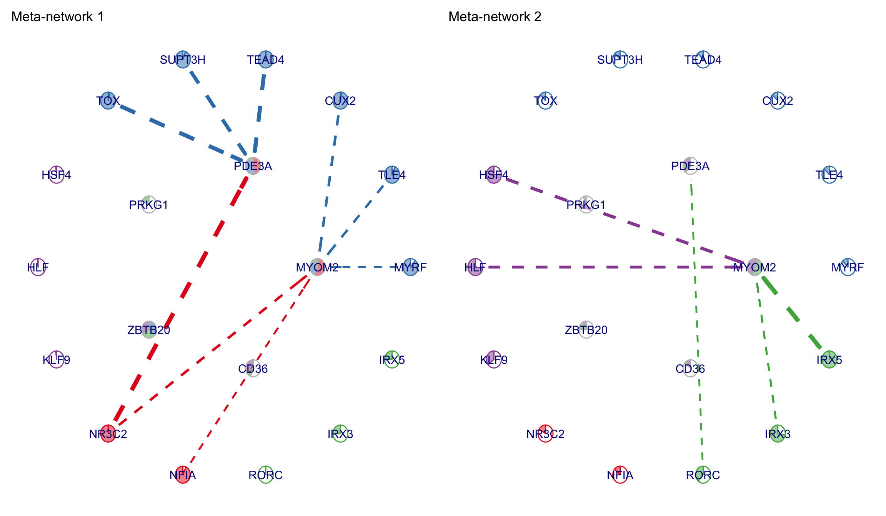
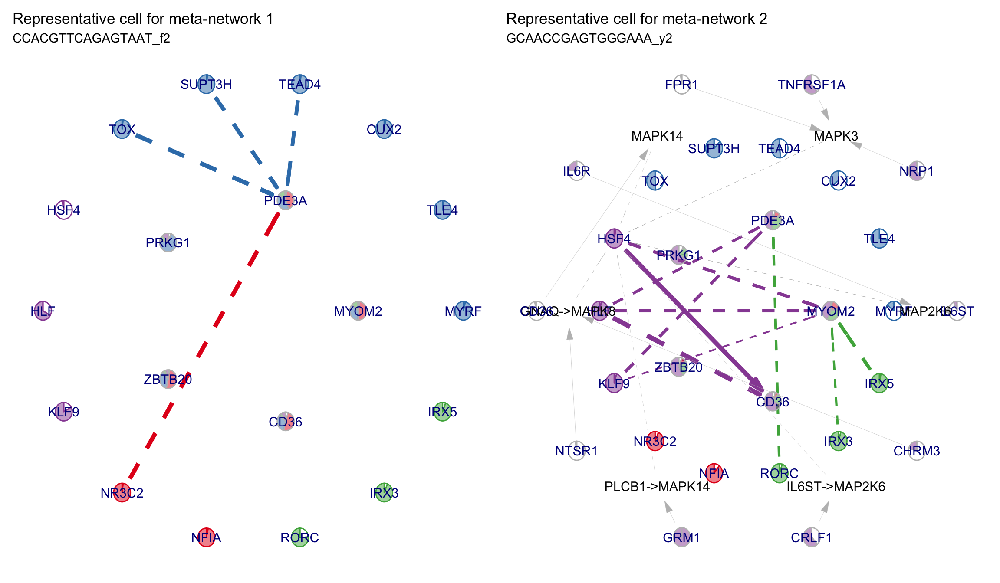
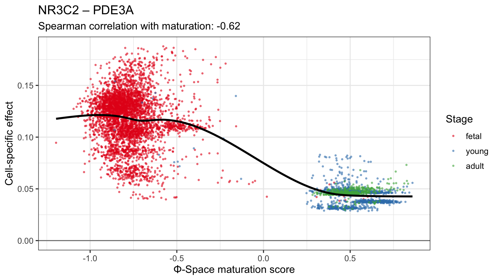
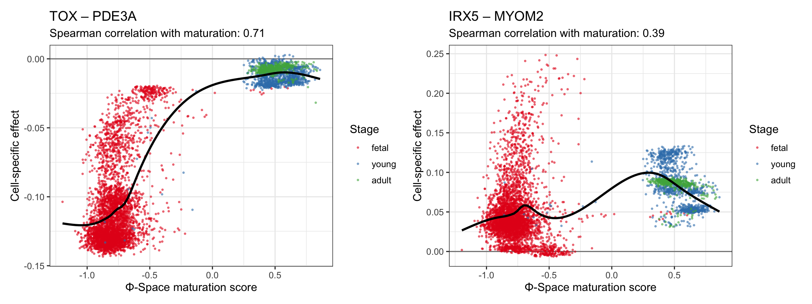

The previous two modules gave us a continuous view of cardiomyocyte maturation. Here we ask a different question: as cardiomyocytes mature, do the relationships between genes change?
It is tempting to call this a gene regulatory network analysis, but that would overstate what single-cell RNA-seq alone can prove. A true GRN is directional and mechanistic: it says that one factor regulates another in a causal sense. Co-expression does not get us all the way there.
Instead, we will build a cell-specific co-expression network. This is a statistical proxy: it tells us which transcription factors and target genes vary together in local neighbourhoods of cells. The co-expression networks can contain useful regulatory hypotheses, but the edges are still associations, not proof of causality.
We use NeighbourNet (NNet), a method for building noisy per-cell co-expression networks and then denoising them into a small number of recurring meta-networks. The method borrows strength from each cell’s nearest neighbours, computes a network for each cell, and then aggregates those networks with non-negative PCA so that the strongest recurring network patterns are visible.
library(SingleCellExperiment)
library(Seurat)
library(NeighbourNet)
library(PhiSpace)
library(ggplot2)
library(dplyr)
library(tibble)
library(patchwork)
library(RColorBrewer)Module 2 saved the cardiomyocyte subset with expression, Φ-Space
scores, UMAP coordinates, the slingshot and DPT pseudotimes, and the
trajectory-free pt_phi_score.
cm <- readRDS(file.path(results_dir, "06_cm_pseudotime.rds"))
cat("Assays: ", paste(assayNames(cm), collapse = ", "), "\n")## Assays: counts, logcountscat("reducedDims: ", paste(reducedDimNames(cm), collapse = ", "), "\n")## reducedDims: PhiSpace, PCA, UMAPcat("Cells: ", ncol(cm), "\n")## Cells: 5411cat("Genes: ", nrow(cm), "\n")## Genes: 15094cat("Groups: ", paste(table(cm$group), collapse = ", "), "\n")## Groups: 409, 4016, 986summary(cm$pt_phi_score)## Min. 1st Qu. Median Mean 3rd Qu. Max.
## -1.1966 -0.8363 -0.7419 -0.4401 0.3216 0.8593results_dir <- Sys.getenv("SCW_RESULTS", "../results")
dir.create(results_dir, showWarnings = FALSE, recursive = TRUE)
# n_targets and n_meta_networks are defined in the setup chunk above so
# that inline references in the surrounding prose resolve even when this
# chunk is skipped (data_ok = FALSE).NeighbourNet expects a Seurat object with normalised expression in
the data layer. The scran logcounts from
Module 1 are already suitable, so we do not run
NormalizeData() again.
stopifnot(all(c("counts", "logcounts") %in% assayNames(cm)))
seu <- as.Seurat(cm, counts = "counts", data = "logcounts")
seu$pt_phi_score <- cm$pt_phi_score
seu$group <- cm$group
seu$PhiCellType <- cm$PhiCellType
seu$PhiCellTypeBroad <- cm$PhiCellTypeBroad
cat("Seurat cells:", ncol(seu), "\n")## Seurat cells: 5411cat("Seurat genes:", nrow(seu), "\n")## Seurat genes: 15094head(seu@meta.data[, c("group", "PhiCellType", "pt_phi_score")])NeighbourNet can use its built-in target-gene prior directly, but for
a short workshop module we want the network to focus on the maturation
axis. We therefore rank genes by their association with
pt_phi_score and keep the top 10.
rankFeatures() fits a PLS model from expression to the
continuous response and ranks genes by the absolute coefficient. The
importance is therefore unsigned: a gene can rank high because it rises
with maturation or because it falls. Exercise 1 asks which it is for our
genes.
rank_res <- PhiSpace::rankFeatures(
data = cm,
response = cm$pt_phi_score,
method = "PLS",
source = "assay",
assay_name = "logcounts",
center = TRUE,
scale = FALSE,
seed = 42
)
rank_tbl <- as_tibble(rank_res$feature_ranking)
score_col <- if ("importance_norm" %in% names(rank_tbl)) {
"importance_norm"
} else {
setdiff(names(rank_tbl), "feature")[1]
}
rank_tbl <- rank_tbl |>
arrange(desc(.data[[score_col]]))
top_targets <- head(rank_tbl$feature, n_targets)
top_targets <- intersect(top_targets, rownames(seu))
cat("Top targets retained in Seurat object:", length(top_targets), "\n")## Top targets retained in Seurat object: 10head(rank_tbl, 20)The top-ranked genes should look like cardiomyocyte maturation markers: contractile genes, metabolic genes, stress-response genes, and genes that track the fetal-to-adult shift in cell state. The exact list is less important than the principle: the target set defines the biological question asked of NeighbourNet. Here we keep only 10 target genes so the per-cell network cube is small enough to knit during the workshop.
assay(cm, "logcounts")) and
cm$pt_phi_score. Which genes are higher in foetal-like
cells, and which in adult-like cells?NeighbourNet::gene.list$targets. Which of our
genes are missing from it?target_check <- tibble(
gene = top_targets,
spearman_with_maturation = vapply(top_targets, function(g) {
cor(assay(cm, "logcounts")[g, ], cm$pt_phi_score, method = "spearman")
}, numeric(1)),
in_target_prior = top_targets %in% NeighbourNet::gene.list$targets
) |>
mutate(spearman_with_maturation = round(spearman_with_maturation, 2))
target_checkThe core workflow is:
This is the slowest chunk in the module, so we cache the Seurat
object immediately after build.meta.network().
nnet_cache <- file.path(
results_dir,
sprintf("07_seu_nnet_%02dtargets.rds", n_targets)
)
# NeighbourNet 1.0.0's select.gene() currently references a hard-coded
# object name internally, so we reproduce the small filtering step here.
select_nnet_genes <- function(seurat_obj, targets, min.cells = 10) {
gene_list <- NeighbourNet::gene.list
genes_all <- rownames(seurat_obj)
counts <- SeuratObject::LayerData(seurat_obj, layer = "counts")
n_cell_expressed <- Matrix::rowSums(counts[genes_all, , drop = FALSE] > 0)
genes_kept <- genes_all[n_cell_expressed > min.cells]
tfs <- intersect(genes_kept, unique(gene_list$tfs))
targets <- intersect(genes_kept, intersect(gene_list$targets, targets))
list(
tfs = tfs,
targets = targets,
bgs = character(0),
genes = unique(c(tfs, targets))
)
}
if (file.exists(nnet_cache)) {
seu <- readRDS(nnet_cache)
message("Loaded cached NeighbourNet object from ", nnet_cache)
} else {
genes <- select_nnet_genes(seu, targets = top_targets, min.cells = 10)
cat("Predictor TFs:", length(genes$tfs), "\n")
cat("Target genes: ", length(genes$targets), "\n")
cat("Total genes: ", length(genes$genes), "\n")
if (length(genes$targets) < 5) {
warning("Fewer than five target genes survived filtering; ",
"the network plots may be sparse.")
}
if (length(genes$genes) < 3) {
stop("Too few genes survived NeighbourNet filtering.")
}
npcs <- min(50, length(genes$genes) - 1, ncol(seu) - 1)
knn <- min(30, ncol(seu) - 1)
seu <- prepare.seurat(seu, genes = genes$genes, npcs = npcs)
seu <- prepare.graph(seu, knn = knn)
seu <- prepare.reg(seu,
predictors = genes$tfs,
responses = genes$targets)
seu <- run.nn.reg(seu,
responses = genes$targets,
return.p.val = TRUE)
seu <- build.meta.network(seu, n.net = n_meta_networks)
seu@misc$Module7 <- list(
feature_ranking = rank_tbl,
top_targets = top_targets,
n_targets = n_targets,
n_meta_networks = n_meta_networks
)
saveRDS(seu, nnet_cache)
}The expensive output now lives under seu@misc$NNet.mod.
Two pieces matter most for this module:
meta.network$npca.loadings: one row per cell and one
column per meta-network. Each value is a cell’s non-negative
weight on a meta-network: how much that cell’s own
network contributes to it.meta.network$meta.network: the meta-networks
themselves, one target × TF matrix per meta-network. Each is a weighted
sum of the cell-specific networks, with the weights above.nnet_mod <- Seurat::Misc(seu, "NNet.mod")
names(nnet_mod)## [1] "effect" "p.val" "meta.network" "meta.response"
## [5] "mus" "sigmas" "subsampled" "smoothed"
## [9] "pruned" "gene.sets" "cells" "defaults"
## [13] "custom.y" "w"names(nnet_mod$meta.network)## [1] "meta.network" "p.val" "pcs" "pca.loadings"
## [5] "pca.sd" "npca.loadings" "npca.sd" "scale"
## [9] "non.neg" "setting"dim(nnet_mod$meta.network$npca.loadings)## [1] 5411 2dim(nnet_mod$meta.network$meta.network)## [1] 5 875 2Each cell has a weight on every meta-network: how much its own network contributes to that meta-network. Before looking at any one network, we check whether these scores carry the maturation signal. As in Figure 3B of the NeighbourNet paper, we colour the familiar expression UMAP by the scores. If a meta-network’s score changes from the foetal-like to the adult-like region, NeighbourNet has found a co-expression program that varies with maturation.
We reuse the PCA-based UMAP from Module 2 and colour each cell by its weight on meta-networks 1 and 2, next to the Φ-Space maturation score for reference.
meta_scores <- nnet_mod$meta.network$npca.loadings
if (is.null(rownames(meta_scores))) {
rownames(meta_scores) <- colnames(seu)
}
umap <- reducedDim(cm, "UMAP")
umap_df <- as.data.frame(umap[match(rownames(meta_scores), colnames(cm)), ,
drop = FALSE])
colnames(umap_df) <- c("UMAP1", "UMAP2")
umap_df$cell <- rownames(meta_scores)
umap_df$NNet1 <- meta_scores[, 1]
umap_df$NNet2 <- meta_scores[, 2]
umap_df$pt_phi_score <- seu$pt_phi_score[match(umap_df$cell, colnames(seu))]
umap_score_plot <- function(score_col, title) {
ggplot(umap_df, aes(UMAP1, UMAP2, colour = .data[[score_col]])) +
geom_point(size = 0.5, alpha = 0.75) +
scale_colour_distiller(palette = "Spectral", direction = -1) +
labs(title = title, colour = "Score") +
theme_bw(base_size = 12)
}
umap_score_plot("NNet1", "Meta-network 1 weight") |
umap_score_plot("NNet2", "Meta-network 2 weight") |
umap_score_plot("pt_phi_score", "Φ-Space maturation score")
Each meta-network has a weight per cell. We correlate each weight
with pt_phi_score. The paper notes that the meta-networks
are ordered: meta-network 1 is the strongest recurring co-expression
pattern in the ensemble, and meta-network 2 is the next strongest
pattern. We therefore show both, and use the correlation table to
interpret which one tracks maturation most closely.
safe_cor <- function(x, y) {
sx <- stats::sd(x, na.rm = TRUE)
sy <- stats::sd(y, na.rm = TRUE)
if (is.na(sx) || is.na(sy) || sx == 0 || sy == 0) {
return(NA_real_)
}
stats::cor(x, y, use = "complete.obs", method = "spearman")
}
cor_tbl <- tibble(
meta_network = seq_len(ncol(meta_scores)),
spearman_cor = apply(meta_scores, 2, safe_cor, y = seu$pt_phi_score)
) |>
mutate(abs_cor = abs(spearman_cor)) |>
arrange(desc(abs_cor))
cor_tblmaturation_idx <- cor_tbl$meta_network[1]
cat("Meta-network most associated with maturation:", maturation_idx, "\n")## Meta-network most associated with maturation: 1This selection is intentionally data-driven. We are not deciding which network “looks right”; we are asking which recurring co-expression pattern tracks the continuous maturation score most strongly.
The signs matter too. Meta-network 1’s weight falls with maturation: it is the co-expression pattern of foetal-like cells. Meta-network 2’s weight rises with maturation: it is the pattern of post-natal cells. The UMAP above shows the same thing.
Figure 3C in the paper shows the weighted adjacency matrices behind the first two meta-networks. Each heatmap is a TF-by-target view of a meta-network: bright tiles mark TF-target pairs with strong aggregated co-expression in that recurrent network pattern.
Because our workshop run keeps only 10 requested target genes, and five of them are in NeighbourNet’s target prior, we show all retained targets and the top 10 TFs for each meta-network.
plot_adjacency <- function(i, n_tf = 10, n_target = 10) {
mat <- Seurat::Misc(seu, "NNet.mod")$meta.network$meta.network[, , i]
target_score <- Matrix::rowSums(abs(mat))
tf_score <- Matrix::colSums(abs(mat))
targets <- names(sort(target_score, decreasing = TRUE))[
seq_len(min(n_target, length(target_score)))
]
tfs <- names(sort(tf_score, decreasing = TRUE))[
seq_len(min(n_tf, length(tf_score)))
]
plot_mat <- t(mat[targets, tfs, drop = FALSE])
if (nrow(plot_mat) > 1) {
plot_mat <- plot_mat[hclust(dist(plot_mat))$order, , drop = FALSE]
}
if (ncol(plot_mat) > 1) {
plot_mat <- plot_mat[, hclust(dist(t(plot_mat)))$order, drop = FALSE]
}
adj_df <- as.data.frame(as.table(plot_mat))
colnames(adj_df) <- c("TF", "Target", "weight")
ggplot(adj_df, aes(Target, TF, fill = weight)) +
geom_tile(colour = "white", linewidth = 0.2) +
scale_fill_gradient(low = "white", high = "#B2182B") +
labs(title = paste("Meta-network", i, "weighted adjacency"),
x = "Target gene", y = "TF", fill = "Weight") +
theme_bw(base_size = 11) +
theme(axis.text.x = element_text(angle = 45, hjust = 1))
}
plot_adjacency(1) | plot_adjacency(2)
NeighbourNet’s network plot uses prior knowledge to arrange the figure in layers. The radial layout helps interpretation, but it should not be read as experimental proof of directionality.
central_genes <- select.central.genes(
seu,
n.net = min(2, n_meta_networks),
n.per.component = 4,
k = 2
)
seu <- prepare.visualise(seu, central.genes = central_genes, n.clu = 4)
edge_cutoff <- function(p_mat) {
mean(apply(p_mat, 1, max, na.rm = TRUE), na.rm = TRUE)
}
plot_meta_network <- function(i) {
meta_p <- Seurat::Misc(seu, "NNet.mod")$meta.network$p.val[, , i]
visualise.network(
seu,
i = i,
meta.network = TRUE,
cutoff = edge_cutoff(meta_p),
radius = c(0.4, 0.7, 0.85, 1),
pie.radius = 0.04,
text.size = 4
) +
labs(title = paste("Meta-network", i))
}
plot_meta_network(1) | plot_meta_network(2)
Read these as compact hypothesis generators. The target clusters tell us which maturation-associated genes share TF co-expression structure. The TFs and receptor context suggest plausible upstream biology. Follow-up experiments or perturbation data would be needed before calling any edge causal regulation.
The static plots pack a lot into small glyphs. Below, the same two
meta-networks are drawn as interactive networks with exactly the same
genes, edges, cutoff and layout. The helper functions live in
R/nnet_viz.R:
nnet_tables() returns the network as two tables:
nodes (gene, role, TF module, strongest edge confidence)
and edges (TF, target, weight, confidence, prior-knowledge
support).nnet_vis() draws those tables with
visNetwork.How to read the view:
Gene positions are identical in both views, so you can compare them directly.
source("../R/nnet_viz.R")
meta_tabs <- lapply(1:2, function(i) {
nnet_tables(seu, i = i, meta.network = TRUE,
radius = c(0.4, 0.7, 0.85, 1))
})
nnet_vis(meta_tabs[[1]])nnet_vis(meta_tabs[[2]])The tables are ordinary data frames, so you can sort, filter or save them:
meta_tabs[[1]]$edges# Edges per target gene, and the TF modules they come from
lapply(meta_tabs, function(tabs) {
tabs$edges |>
group_by(target = sub("^g1\\.", "", to)) |>
summarise(n_edges = n(),
tf_modules = paste(sort(unique(module)), collapse = ", "),
strongest_weight = round(max(weight), 2))
})## [[1]]
## # A tibble: 2 × 4
## target n_edges tf_modules strongest_weight
## <chr> <int> <chr> <dbl>
## 1 MYOM2 5 1, 2 0.59
## 2 PDE3A 4 1, 2 1
##
## [[2]]
## # A tibble: 2 × 4
## target n_edges tf_modules strongest_weight
## <chr> <int> <chr> <dbl>
## 1 MYOM2 4 3, 4 1
## 2 PDE3A 1 3 0.42# ZBTB20's strongest TFs in meta-network 1, by weight
zbtb20_w <- nnet_mod$meta.network$meta.network["ZBTB20", , 1]
round(head(sort(zbtb20_w, decreasing = TRUE), 3), 2)## ZHX2 PLAG1 SP100
## 6.10 4.14 3.12# ...compared with the TFs of the strongest edges in the drawing
pde3a_w <- nnet_mod$meta.network$meta.network["PDE3A", , 1]
round(head(sort(pde3a_w, decreasing = TRUE), 3), 2)## NR3C2 TOX TEAD4
## 13.18 12.19 11.99# Edges with prior-knowledge support, per meta-network
vapply(meta_tabs, function(tabs) sum(tabs$edges$prior != "none"), integer(1))## [1] 0 0A meta-network is an aggregate over many cell-specific networks. To make that connection concrete, we pick one representative cell for each of the first two meta-networks: the cell with the largest weight on that meta-network. These plots are slices of the original cell-specific network ensemble, not averages.
shown_meta_networks <- seq_len(min(2, ncol(meta_scores)))
rep_tbl <- tibble(
meta_network = shown_meta_networks,
cell_idx = vapply(shown_meta_networks, function(i) {
which.max(meta_scores[, i])
}, integer(1))
) |>
mutate(
cell = rownames(meta_scores)[cell_idx],
meta_weight = meta_scores[cbind(cell_idx, meta_network)],
group = seu$group[match(cell, colnames(seu))],
pt_phi_score = seu$pt_phi_score[match(cell, colnames(seu))]
)
rep_tblplot_cell_network <- function(cell_idx, meta_idx, cell_name) {
cell_p <- Seurat::Misc(seu, "NNet.mod")$p.val[, , cell_idx]
visualise.network(
seu,
i = cell_idx,
meta.network = FALSE,
cutoff = edge_cutoff(cell_p),
radius = c(0.4, 0.7, 0.85, 1),
pie.radius = 0.04,
text.size = 4
) +
labs(title = paste("Representative cell for meta-network",
meta_idx),
subtitle = cell_name)
}
cell_plots <- lapply(seq_len(nrow(rep_tbl)), function(i) {
plot_cell_network(rep_tbl$cell_idx[i],
rep_tbl$meta_network[i],
rep_tbl$cell[i])
})
wrap_plots(cell_plots, nrow = 1)
The representative cell networks should resemble their corresponding meta-networks, but they will be noisier. That is the point of the meta-network step: it denoises repeated cell-specific patterns without collapsing the whole population into a single global network.
The representative cells above are chosen by meta-network weight.
Instead, compare the cell-specific networks of the most
foetal-like and the most adult-like cell
(lowest and highest pt_phi_score). Use
nnet_tables(seu, i = <cell index>, meta.network = FALSE)
and nnet_vis(): gene positions are the same as in the
meta-network views, so you can compare all four directly. Which TFs and
targets are connected in each cell? Which donor stage does the most
adult-like cell come from?
extreme_cells <- c(most_foetal = which.min(seu$pt_phi_score),
most_adult = which.max(seu$pt_phi_score))
seu$group[extreme_cells]## CCTCCAAGTAATGCGG_f2 TCGAACATCTAAGGAA_y2
## "fetal" "young"cell_tabs <- lapply(extreme_cells, function(i) {
nnet_tables(seu, i = i, meta.network = FALSE,
radius = c(0.4, 0.7, 0.85, 1))
})
lapply(cell_tabs, `[[`, "edges")## $most_foetal.CCTCCAAGTAATGCGG_f2
## from to kind weight confidence prior module
## 1 g2.TOX g1.PDE3A co-expression 0.5735234 0.9688455 none 2
##
## $most_adult.TCGAACATCTAAGGAA_y2
## from to kind weight confidence prior module
## 1 g2.KLF9 g1.PDE3A co-expression 0.7449725 0.9796409 none 4
## 2 g2.HSF4 g1.MYOM2 co-expression 0.4739657 0.9764711 none 4
## 3 g2.KLF9 g1.ZBTB20 co-expression 0.4046725 0.9799045 none 4nnet_vis(cell_tabs$most_foetal, title = "Most foetal-like cell")nnet_vis(cell_tabs$most_adult, title = "Most adult-like cell")The question of this module is whether relationships between genes
change as cardiomyocytes mature. NeighbourNet stores, for every cell,
the signed strength of each TF–target association in that cell’s
neighbourhood: effect[target, TF, cell]. Positive means the
two genes go up and down together, negative means one goes up as the
other goes down. Following one edge across cells, ordered by
pt_phi_score, shows whether it changes with maturation.
edge_along_maturation <- function(tf, target) {
effect <- nnet_mod$effect[target, tf, ]
df <- tibble(
pt_phi_score = seu$pt_phi_score,
effect = effect,
stage = factor(seu$group, levels = c("fetal", "young", "adult"))
)
ggplot(df, aes(pt_phi_score, effect)) +
geom_hline(yintercept = 0, colour = "grey50") +
geom_point(aes(colour = stage), size = 0.5, alpha = 0.5) +
geom_smooth(colour = "black", se = FALSE) +
scale_colour_brewer(palette = "Set1") +
labs(title = paste(tf, "–", target),
subtitle = sprintf("Spearman correlation with maturation: %.2f",
cor(effect, df$pt_phi_score,
method = "spearman")),
x = "Φ-Space maturation score", y = "Cell-specific effect",
colour = "Stage") +
theme_bw(base_size = 12)
}
edge_along_maturation("NR3C2", "PDE3A")
The strongest edge of meta-network 1, NR3C2–PDE3A, is strongest in foetal-like cells and weaker after birth, as we would expect for the foetal meta-network.
edge_along_maturation("TOX", "PDE3A") | edge_along_maturation("IRX5", "MYOM2")
Every network view above draws only the edges whose confidence is
above a cutoff. The default is the mean, over target genes, of each
target’s strongest edge confidence. Redraw meta-network 1 with
cutoff = 0.5 and cutoff = 0.99 in
nnet_tables(). Which edges survive a strict cutoff?
meta_tabs[[1]]$info$cutoff # the default cutoff## [1] 0.7171637for (cutoff in c(0.5, 0.99)) {
tabs <- nnet_tables(seu, i = 1, meta.network = TRUE, cutoff = cutoff,
radius = c(0.4, 0.7, 0.85, 1))
cat("cutoff", cutoff, ":", nrow(tabs$edges), "edges\n")
}## cutoff 0.5 : 12 edges
## cutoff 0.99 : 2 edgesstrict <- nnet_tables(seu, i = 1, meta.network = TRUE, cutoff = 0.99,
radius = c(0.4, 0.7, 0.85, 1))
strict$edgesnnet_vis(strict, title = "Meta-network 1, cutoff 0.99")A lower cutoff adds weaker edges; a strict cutoff keeps only the most confident ones, here edges into PDE3A. The cutoff changes how busy the picture is, not the network itself: report it with any network figure, and check that your conclusions do not depend on it.
We kept only 10 target genes so the module runs quickly. Re-run
NeighbourNet with the top 20 genes from rank_tbl (about 40
seconds and 1 GB of memory). How many targets does NeighbourNet keep? Do
the first two meta-networks still track maturation (compare with the
correlation table above)?
seu20 <- as.Seurat(cm, counts = "counts", data = "logcounts")
seu20$pt_phi_score <- cm$pt_phi_score
genes20 <- select_nnet_genes(seu20, targets = head(rank_tbl$feature, 20))
genes20$targets## [1] "CFLAR" "ZBTB20" "DGKG" "IGFBP7" "CD36" "MYOM2" "PRKG1" "PDE3A"
## [9] "MYH6"seu20 <- seu20 |>
prepare.seurat(genes = genes20$genes, npcs = 50) |>
prepare.graph(knn = 30) |>
prepare.reg(predictors = genes20$tfs, responses = genes20$targets) |>
run.nn.reg(responses = genes20$targets, return.p.val = TRUE) |>
build.meta.network(n.net = 2)
w20 <- Seurat::Misc(seu20, "NNet.mod")$meta.network$npca.loadings
round(cor(w20, seu20$pt_phi_score, method = "spearman"), 2)## [,1]
## component_1 -0.72
## component_2 0.75rm(seu20)
invisible(gc())NeighbourNet also includes receptor.activity(), which
propagates cell-specific TF-target networks through the signalling prior
to estimate receptor activity per cell. That is useful when the
biological question is about upstream signalling pathways, but it would
add another conceptual layer to this short workshop. For self-study, the
NeighbourNet cell-cycle vignette shows the full receptor-activity
workflow.
This module writes one cache:
results/07_seu_nnet_10targets.rds — the cardiomyocyte
Seurat object after build.meta.network(), including
@misc$NNet.mod and the Module 3 target-gene selection
metadata.Because the cache is saved before visualisation, you can re-run the plots and tune the network layout without repeating the per-cell regressions.
pt_phi_score.sessionInfo()## R version 4.6.0 (2026-04-24)
## Platform: aarch64-apple-darwin23
## Running under: macOS Tahoe 26.6.2
##
## Matrix products: default
## BLAS: /Library/Frameworks/R.framework/Versions/4.6/Resources/lib/libRblas.0.dylib
## LAPACK: /Library/Frameworks/R.framework/Versions/4.6/Resources/lib/libRlapack.dylib; LAPACK version 3.12.1
##
## locale:
## [1] en_AU/en_AU/en_AU/C/en_AU/en_AU
##
## time zone: Australia/Melbourne
## tzcode source: internal
##
## attached base packages:
## [1] grid stats4 stats graphics grDevices utils datasets
## [8] methods base
##
## other attached packages:
## [1] NeighbourNet_1.0.0 RColorBrewer_1.1-3
## [3] scater_1.40.2 scuttle_1.22.0
## [5] destiny_3.26.0 slingshot_2.20.0
## [7] TrajectoryUtils_1.20.0 princurve_2.1.6
## [9] ComplexHeatmap_2.28.0 patchwork_1.3.2
## [11] tibble_3.3.1 PhiSpace_0.99.0
## [13] SpatialExperiment_1.22.0 future_1.70.0
## [15] tidyr_1.3.2 dplyr_1.2.1
## [17] ggplot2_4.0.3 SingleCellExperiment_1.34.0
## [19] SummarizedExperiment_1.42.0 Biobase_2.72.0
## [21] GenomicRanges_1.64.0 Seqinfo_1.2.0
## [23] IRanges_2.46.0 S4Vectors_0.50.1
## [25] BiocGenerics_0.58.1 generics_0.1.4
## [27] MatrixGenerics_1.24.0 matrixStats_1.5.0
## [29] Seurat_5.5.1 SeuratObject_5.4.0
## [31] sp_2.2-1
##
## loaded via a namespace (and not attached):
## [1] fs_2.1.0 spatstat.sparse_3.2-0 httr_1.4.8
## [4] doParallel_1.0.17 tools_4.6.0 mlr3learners_0.15.0
## [7] sctransform_0.4.3 backports_1.5.1 utf8_1.2.6
## [10] R6_2.6.1 mgcv_1.9-4 lazyeval_0.2.3
## [13] uwot_0.2.4 GetoptLong_1.1.1 withr_3.0.3
## [16] prettyunits_1.2.0 gridExtra_2.3.1 progressr_1.0.0
## [19] cli_3.6.6 Cairo_1.7-0 spatstat.explore_3.8-1
## [22] fastDummies_1.7.6 scatterpie_0.2.6 labeling_0.4.3
## [25] sass_0.4.10 S7_0.2.2 robustbase_0.99-7
## [28] spatstat.data_3.1-9 proxy_0.4-29 ggridges_0.5.7
## [31] pbapply_1.7-4 yulab.utils_0.2.4 mlr3tuning_1.6.0
## [34] paradox_1.0.1 parallelly_1.48.0 limma_3.68.4
## [37] visNetwork_2.1.4 shape_1.4.6.1 ica_1.0-3
## [40] spatstat.random_3.5-0 car_3.1-5 Matrix_1.7-5
## [43] ggbeeswarm_0.7.3 abind_1.4-8 lifecycle_1.0.5
## [46] scatterplot3d_0.3-45 yaml_2.3.12 carData_3.0-6
## [49] SparseArray_1.12.2 Rtsne_0.17 promises_1.5.0
## [52] crayon_1.5.3 miniUI_0.1.2 lattice_0.22-9
## [55] beachmat_2.28.0 cowplot_1.2.0 magick_2.9.1
## [58] pillar_1.11.1 knitr_1.51 rjson_0.2.23
## [61] boot_1.3-32 future.apply_1.20.2 codetools_0.2-20
## [64] glue_1.8.1 ggfun_0.2.1 spatstat.univar_3.2-0
## [67] pcaMethods_2.4.0 data.table_1.18.4 vcd_1.4-13
## [70] vctrs_0.7.3 png_0.1-9 spam_2.11-4
## [73] Rdpack_2.6.6 gtable_0.3.6 cachem_1.1.0
## [76] xfun_0.59 rbibutils_2.4.1 S4Arrays_1.12.0
## [79] mime_0.13 tidygraph_1.3.1 RcppEigen_0.3.4.0.2
## [82] survival_3.8-9 iterators_1.0.14 statmod_1.5.2
## [85] fitdistrplus_1.2-6 ROCR_1.0-12 nlme_3.1-169
## [88] progress_1.2.3 bbotk_1.11.0 RcppAnnoy_0.0.23
## [91] mlr3pipelines_0.11.0 bslib_0.11.0 mlr3_1.7.1
## [94] irlba_2.3.7 vipor_0.4.7 KernSmooth_2.23-26
## [97] otel_0.2.0 colorspace_2.1-2 moocore_0.3.1
## [100] nnet_7.3-20 mlr3misc_0.22.0 tidyselect_1.2.1
## [103] compiler_4.6.0 BiocNeighbors_2.6.0 lgr_0.5.2
## [106] DelayedArray_0.38.2 plotly_4.12.0 checkmate_2.3.4
## [109] scales_1.4.0 DEoptimR_1.2-0 lmtest_0.9-40
## [112] hexbin_1.28.5 rappdirs_0.3.4 palmerpenguins_0.1.1
## [115] stringr_1.6.0 digest_0.6.39 goftest_1.2-3
## [118] spatstat.utils_3.2-3 rmarkdown_2.31 XVector_0.52.0
## [121] htmltools_0.5.9 pkgconfig_2.0.3 fastmap_1.2.0
## [124] rlang_1.3.0 GlobalOptions_0.1.4 htmlwidgets_1.6.4
## [127] ggthemes_5.2.0 shiny_1.14.0 farver_2.1.2
## [130] jquerylib_0.1.4 zoo_1.8-15 jsonlite_2.0.0
## [133] BiocParallel_1.46.0 BiocSingular_1.28.0 magrittr_2.0.5
## [136] Formula_1.2-5 dotCall64_1.2 Rcpp_1.1.2
## [139] viridis_0.6.5 reticulate_1.46.0 stringi_1.8.7
## [142] ggraph_2.2.2 MASS_7.3-65 plyr_1.8.9
## [145] parallel_4.6.0 listenv_1.0.0 ggrepel_0.9.8
## [148] deldir_2.0-4 graphlayouts_1.2.4 splines_4.6.0
## [151] tensor_1.5.1 hms_1.1.4 circlize_0.4.18
## [154] igraph_2.3.3 uuid_1.2-2 ranger_0.18.0
## [157] spatstat.geom_3.8-1 RcppHNSW_0.7.0 ScaledMatrix_1.20.0
## [160] reshape2_1.4.5 evaluate_1.0.5 laeken_0.5.3
## [163] tweenr_2.0.3 foreach_1.5.2 httpuv_1.6.17
## [166] VIM_7.0.0 RANN_2.6.2 purrr_1.2.2
## [169] polyclip_1.10-7 clue_0.3-68 scattermore_1.2
## [172] ggforce_0.5.0 rsvd_1.0.5 xtable_1.8-8
## [175] e1071_1.7-17 RSpectra_0.16-2 later_1.4.8
## [178] viridisLite_0.4.3 class_7.3-23 memoise_2.0.1
## [181] beeswarm_0.4.0 cluster_2.1.8.2 ggplot.multistats_1.0.1
## [184] globals_0.19.1